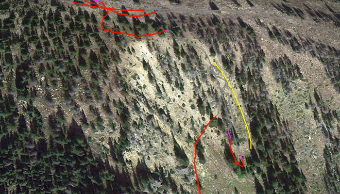

Yard Sale on the Chutes
Sunday, February 9, 2014
Snow for the weekend: a few inches each day from wednesday through sunday. Alli rented some Super7s to see what this downhill fat ski thing was all about. Max was supposed to have a comp on Saturday, but because of wind, they ended up closing Eskimo (along with Hi-Lo, Pano, Pioneer, and Eagle)....so the comp got cancelled. Took her through the do-or-die trees and upper Tohpers...she’s hooked. :) They ended up going back early on Saturday, so I was on my own for Sunday.
Drove down early to Jane, and there’s a line of cars waiting at the pass. Woo hoo! Pass closed; small crowds!!! I end up getting 11th chair up the Gauge, and have some fun first runs (although the snow wasn’t all that deep...still, can’t complain). They opened up the back stagecoach gate, even though eagle wasn’t open...decent stashes back there. I then had an epic run through the frenchy trees, and nailed the frenchman bumps. Chutes were open, so I headed over there.
Decide to start with No-Name. Couple turns in, and I backseat, and kaboom....yard sale. I start sliding...slowly. Get my feet pointed down, still can’t stop. Slide pretty much to the bottom...you can see from the Google Earth image above how far. Wait for a little bit, but since the crowds are low, no one else is coming down. Fine. I start the hike back up to my skis and poles...about 300’ later, I’m there. Needless to say, I’m *still* a little shaken.
Checked out the elevation change; looks to be only about 200’, which would put this at 30 degrees. Sure feels like closer to 45.
I’ve got the hike marked as the yellow line above...the GPS didn’t do so hot tracking it (probably because I was hugging the hill going up). Google’s elevation profile is below...
Here’s an older chute pic, with the hike marked with the black line...
